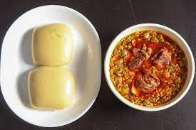
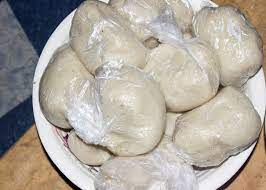
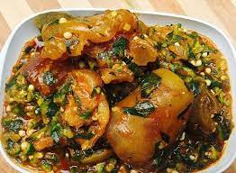
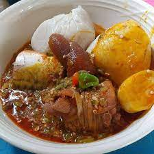

Ingredients
For Banku
- 1 cup of Corn Dough
- 1/2 cup of Cassava Dough
- Salt to taste
For Okro Stew
- 1 cup Okra, diced
- 1 pound meat or chicken, cut into pieces
- 2 onions
- 4 medium-sized tomatoes
- 4 pieces Kpakpo shito pepper
- 1 inch root Ginger
- 2 cloves of garlic
- 1/4 tablespoons herrings
- Cowhide (Wele)
- Cowhide (Wele)
- Crabs (optional)
- 1 salted fish(momoni)
- Salt
- Seasoning cube or powder
Preparetion

For Banku
- In a large bowl, mix Cassava dough with moderate water and strain out the lumps using colander into pot or saucepan.
- After straining into pot, add corn dough, add extra water and mix together using your hands until smooth and slightly
thick mixture is formed. Add salt to taste
- Under medium heat, place mixture on fire. Stir consistently until the mixture starts to boil.
- Once it begins boiling, use a spatula(Banku
ta
) to knead the mixture to prevent it from forming lumps.
- Continuously knead the mixture intermittently until it gets smoother and thicker and its colour changes slightly for
about 15 minutes.
- Banku is ready when you don't taste the raw corn dough after eating or you can mash a little of the cooked mixture in a
little water. If it dissolves and turns milky then your Banku isn't ready.
- When the Banku is ready, scoop it out and wrap each ball in a plain polythene rubber.
- Banku can be kept for about two-three days in an airtight container or longer period in a fridge

For Okro Stew
- Wash chopped meat, crabs and cowhide in a large bowl.
- Wash and cut into pieces 1 onion, garlic, pepper and ginger. Blend until smooth. Reserve some for stew
- Place meat, crabs and wele in a saucepan, add a little water, salt, spices and bring to a boil. Pour in blended
ingredients(reserve 1/4 cup) and steam for about 10 mins until tender.
- In a separate pot, place chopped okro, add a cup of water and let it simmer for about 8 mins. Remove from fire and allow
it to cool.
- Now pour some palm oil into another saucepan. Add salted fish and sliced onions. Cook for about 3 mins
- Add reserved blended kpakpo shito(pepper), ginger and garlic and allow to simmer for about 5 mins.
- Wash and chop tomatoes and add to the sauce.
- Wash your herrings and take out the bones, add to the sauce and let it
- simmer for about 5 mins.
- Now add your steamed beef, and cowhide (wele), stir and cook for a while
- Add your cooked okro and stir to mix evenly, reduce the heat and allow it to cook for about 10 mins. Add some salt to
your preferred taste.
- Serve your Banku with your Okro stew.

Home